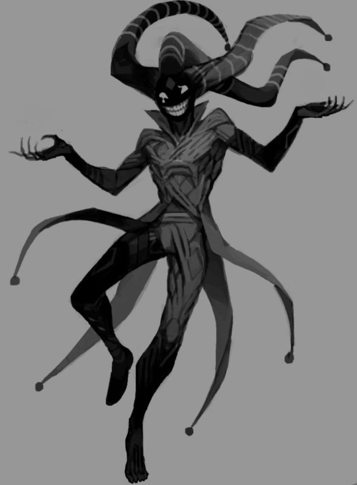

Айрис
«Даже не понимаете, насколько вы оказываетесь в ловушке разума прекрасной и очень красивой маскота Праздника.»
Айрис (англ. Iris) — Душа, что получила в лесу частичку личности Серого Бога Праздников Джека. И ей открылся новый мир, который заиграл красками. А также стример с ви-туб моделькой в виде бабочки.
Содержание
История
Из серости в краски
Айрис не помнит толком свою прошлую унылую жизнь. Она лишь помнит то, что было очень скучно и уныло, подобно дождю и весенней слякотью. И лишь как только она ступила в лесные дебри, найдя странный осколок, который пронзил ей голову, но Айрис не умерла, она стала видеть мир иначе, а вскоре с каждой ночью мир становился её сценой, а она главным конферансье. Каждый раз, засыпая, Айрис узнавала силуэт некого такого же серого и бесцветного Арлекина, который напоминал больше 2-метрового демона, нежели бога праздника, как тот себя назвал. Они общались во сне, она узнавала разные истории, жизнь в Раю, а также то, что пережил бог праздников в мире людей у одного психа. Однако Бог больше не мог появляться во сне, как бы она не хотела, но серый шатёр пропал, её друг пропал. После этого и девушка больше никогда не спала, она обрела силы, которые сделали из неё такую жизнерадостную и неуправляемую хаосом девочку.
Файршоу
Айрис очень долго готовилась к этому событию в городе, чтобы из целого центра запустить салют, обрадовав людей. Она даже в ходе процесса перед началом случайно освободила преступников из одного острова за городом. Сразилась с самим Патронио. А после заставив полицейские структуры суетится по всему городу, чтобы остановить запуск салютов, что никто не смог в итоге сделать и город взорвался.
Грандиозный ивент
После успешной суеты, она решает договорится с Ивриилом в помощи разнесении подарков для последнего файршоу, что правда не получилось, ибо вмешались RX и Патронио. А в последствии с тех пор как последний пропал с её радаров, ей приходится делать всё самой, благо у Айрис есть ОКО и микроскопическое сотрудничество с Клэр, поскольку Айрис той накрутила голоса в голосовании в "ивентах" архипелага.
Личность и характер
Поскольку прошлая судьба и личность Айрис были утеряны и стёрты, то сейчас из себя так называемая Айрис представляет машину беспорядка и воителем хаоса, которая стремится радовать себя и окружающих, даже если это "радовать" будет только для самой Айрис. Её личность, как и приобретённые от осколка силы и воспоминания - очень гиперактивная непоседа, которая хочет быть во внимании у всех. Она редко бывает серьёзной, а все её эмоции - абсолютная ложь, которая из-за её действий становится просто раскрывать. Она очень сильно нарцисс, считая только себя и Клэр настоящими богами.
Внешность
К сожалению Айрис выглядит куда моложе своего возраста, её рост составляет всего каких-то 130 см, что граничит с ростовыми параметрами ребёнка лет 11-12. У Айрис светлая неестественно гладкая кожа, у неё красные глаза и длинные тёмные волосы, с двумя хвостами по бокам сзади (также часто она их распускает, для красивого эффекта объёма) часть прядей которых окрашивается в зависимости от номера души (1 - красный основной; 2 - фиолетовый маскотный; 3 - белый боевой). У неё на постоянке один и тот же костюм, состоящий из чёрного полностью смокинга с фиолетовыми краями в некоторых местах и галстука-бабочки, сам пиджак имеет двойной длинный срез позади. Обувь это не совсем подходящая под её образ - чёрные ботильоны на низком каблуке. Аксессуары: К её наряду идут чёрные перчатки, также в более деловом моменте у неё появляется чёрный цилиндр с фиолетовой лентой (может надеть моноколь).
Способности и Арсенал
- Разделение душ-тел: Обычно Айрис лишь в одном экземпляре, но если потребуется она может создавать свои клоны в количестве дополнительных 2 штук. В таком состоянии особенно уязвимы, ибо все повреждения любого из тел болезненно скажутся на все 3.
- Сила Шалости: То, что помогает ей чудить беспорядки, то что делает её воображение по настоящему непредсказуемо, всё о чём подумает и возжелает подсознание оригинального тела - то исполнится, однако есть большие ограничения, чем сложнее и могущественнее воображаемое нечто, то тем больше уходит сил и может сказаться на том, что тело просто вырубится на несколько часов, а то и на целый день.
- Осколок Праздника: То что делает её такой заводящей и гиперактивной, это почти прямая сила Джека, только сильно искажённая его прошлым, но благодаря этому осколку она может создать лицевую часть Джека и переместится в Серый Шатёр.
- Создание реальностей: В отражающих поверхностях (окна, дисплеи, зеркала, вода) свои маленькие под-измерения, которые могут воздействовать на реальный мир, но таких измерений может быть не более 3 штук (на каждое тело по измерению).
- Невозможность повредить или навредить: Её нельзя зарубить или в целом убить. Запереть да, вырубить да, измотать тоже.
- Мимикрия: Способна применять любые "лица" при помощи масок, а также становится ими физически.
Слабости
- Табу на убийства (от осколка Джека): Айрис НЕ может убить собственноручно даже если захочет. Она может организовать всё для смерти, но нажать на рычажок она даже при всём желании не сможет, потому она и искала тех, кто сможет либо расставить взрывчатки или тех, кто нажмёт на детонатор. Обязательные условия для саморучного убийства это либо дать выбор жертвам, либо оставить реальный шанс на спасение (Часовой механизм при условии ловушек или бомб не менее 30 секунд).
- Истощение: Физически не способна при уставании использовать также на сильном уровне свои способности, а при полном изнеможении она становится не способной ни к чему, становится как обычная девушка.
- Использование осколка: Осколок, который даёт ей 80% сил доступен лишь ночью, поэтому днём она либо учится, либо готовится к ночи, либо просто ведёт свои эфиры, обозревающие разные новости и события.
- Ограниченный мимик: Айрис не способна использовать силы тех кем она воплощается, проще говоря, она не может принять облик Талии и использовать при этом силы Смерти.
- Опасный сон: Если Айрис уснёт (не вырубится, а именно уснёт), то она навсегда потеряет связь с Джеком и большую часть сил с осколком его.
Связи с персонажами
Друзья
- Ивриил: «Лучший друг, печально, что он погиб. А я хотела, чтобы он был со мной в момент большого события моего участия с ОКО.»
- Джек: «О! Я знаю-знаю! Ответ бабочка! А нет-нет! Это павлин-..? Что? А, точно, мы же больше не видимся. Я тебя приберегу как Джина при последнем желании!~»
- Клэр: «Станешь моей мамой? Шутка, мне не нужна мама. Но всё, равно, знаешь, мы... ДОЛЖНЫ обязательно устроить совместные игры!»
- СГС (Альфред): «Знаешь, я тоже очень-очень люблю деньги. Купишь у меня рекламу?»
- Амадей Карс: «Ты такой страшный, но такой забавный. Было бы классно, если ты заменил моему эфиру Ивриила. Ты знал, что Клэр моя приёмная мама?»
- Милли Райс: «ТАК КРУТО! Неужели я тоже буду режисёром нашего фильма в архипелаге! Я тааак счастлива!»
- Глюк Райдер: «Хочешь 500000 денег? Ну у тебя же столько Богов в кармане. Ты ведь такой классный, милый, красивый, при своём шарме, медиа-персона. Столько качеств даже во мне нет.»
- Энджи Доу: «Давай тебе тоже сделаем хвостики?»
Нейтралы
- Эдриан Морн: «Обещаю не буду тебя обижать, если подаришь мне хронос.»
- Эвилай Дримур: «С ней наверное может подойти такая фраза, по типу "Ты весь мир для меня", хаха! »
- Марти Дуглас: «Да тебе в целом ничего не весело. Боишься, что станешь моей тенью перед своими друзьями?»
Неприятели
- Джеррими Райс (Red X): «Пусть ты и меня напал, но я ЧЕСТНО не злюсь на тебя. Но если ты попадёшься мне на глаза, то я организую второй раунд.»
- Дженнифер Райс: «Да ладно, ты убила моего дядю Ивриила. Мы ведь такого могли устроить, тебе не стыдно? Кстати, а зачем только? Ну конечно, лишить меня союзнико, правда, честно, это сильно.»
- Коул Райс: «У тебя свои тараканы в голове. Но я приглашу тебя на вкусную кола-пати, где мы сможем поговорить, я возьму у тебя интервью, где ты по сценарию скажешь, какая твоя госпожа Айрис хорошая, что Страж одобряет на своём законном уровне действия.»
- Черри Райдер: «О Боже! Со-брат лучшего парня по оценкам, но только без 2 масок богов, и красивой врачебки.»
- Габриэль Винс: «Кстати, мне Клэр сказала, что ты больше не ангелок, а также, что тот закон богов, название которого я так и не запомнила не действует! Теперь я тебе надаю злых и плохих томаков.»
- Ремор: «Жестокий и обозлённый рогатый суп-стат. И ты прямо среди людей. Представляю, КАКОЙ это дискомфортик.»
Интересные факты
- Нельзя верить: Практически всё, что говорит и делает Айрис, даже если что-то обещает хорошее, то лучше ей не верить. Ведь редко что делается ею изначально заканчивается хорошо.
- Плохое зрение: У неё зрение -2, даже божественный осколок в ней не помогает решить эту проблему, поэтому как минимум в школе она носит очки.
- Маскоты: Сама по себе она маскот Бога Праздника, но уже её маскот является ви-туб моделька чёрного енота с усиками и крыльями бабочки.
- Болезни: СДВГ и диссоциальное расстройство личности, биполярное расстройство личности.
- Имитатор (продолжение от болезни): Из-за ДРЛ и биполярки она всегда держится на безумном веселье, а все остальные эмоции она имитирует.
- Дочь Богини: Исключительно из-за Джека в ней, а также по его воспоминанием Клэр была как материнская фигура, очень редко, но была, Айрис считает её своей приёмной матерью и хочет тусить в её компании.
- Организатор катастрофы: Устроила одну из самых масштабных катастроф в классической АУ, а именно, она в одиночку заминировала целый город из примерно 200 часовых бомб, в следствии чего погибло много людей и 90% города было разрушено за одну ночь.
- Чередование: У неё есть собственное внегласное, но основное правило всех её событий. Сначала катастрофа, затем счастье, а потом всё по новой, по кругу.
- Интерес к Райсам: Скорее всего удача Коула, но в обратном направлении, ей интересны Райсы по линии Джерри, что получается как Оливия и Ремор попадают под интерес, так и все родственники Джерри, включая его детей, больший интерес именно Коул и Дженни. (И это 100% не потому что Милли "Райс")
Галерея
